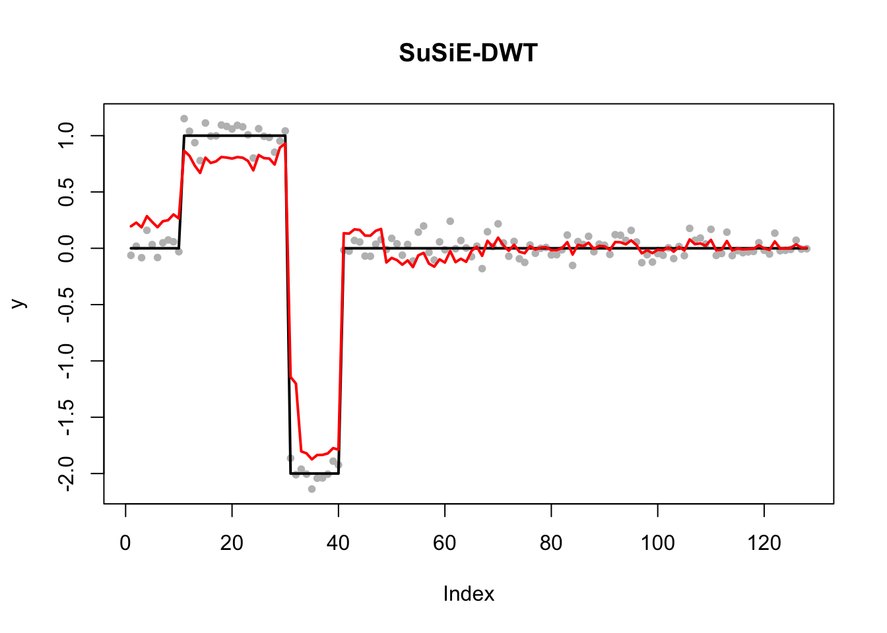
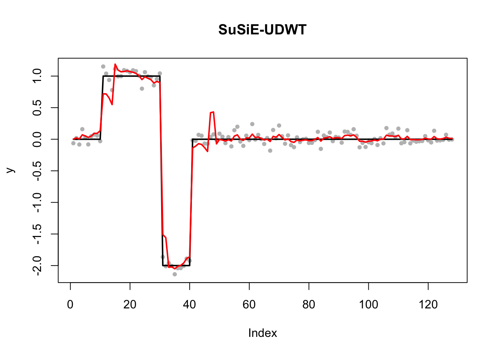
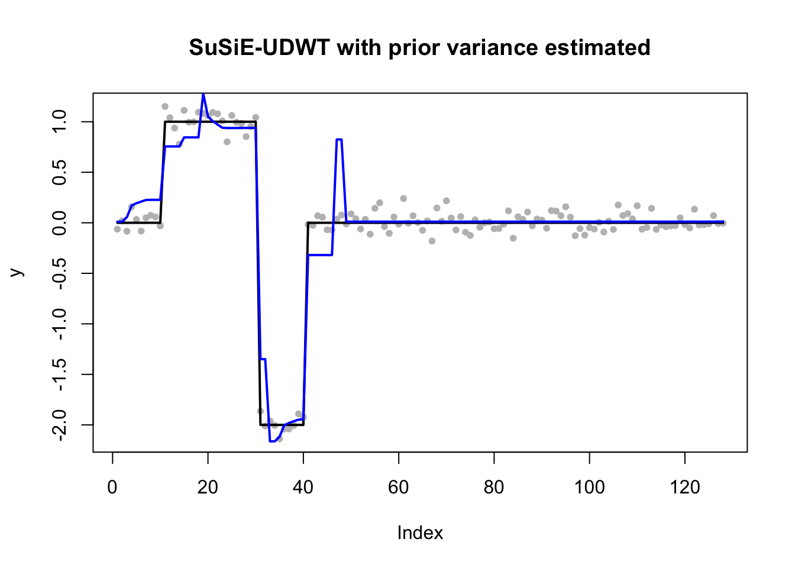
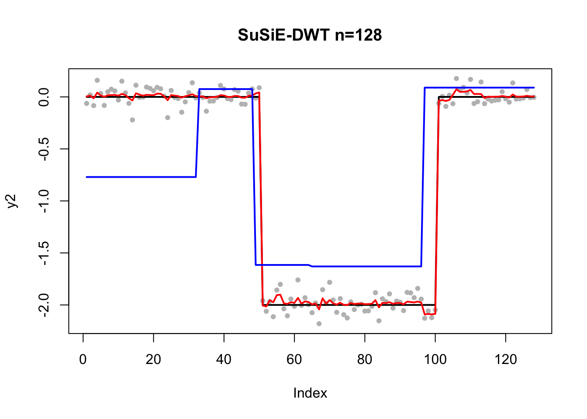
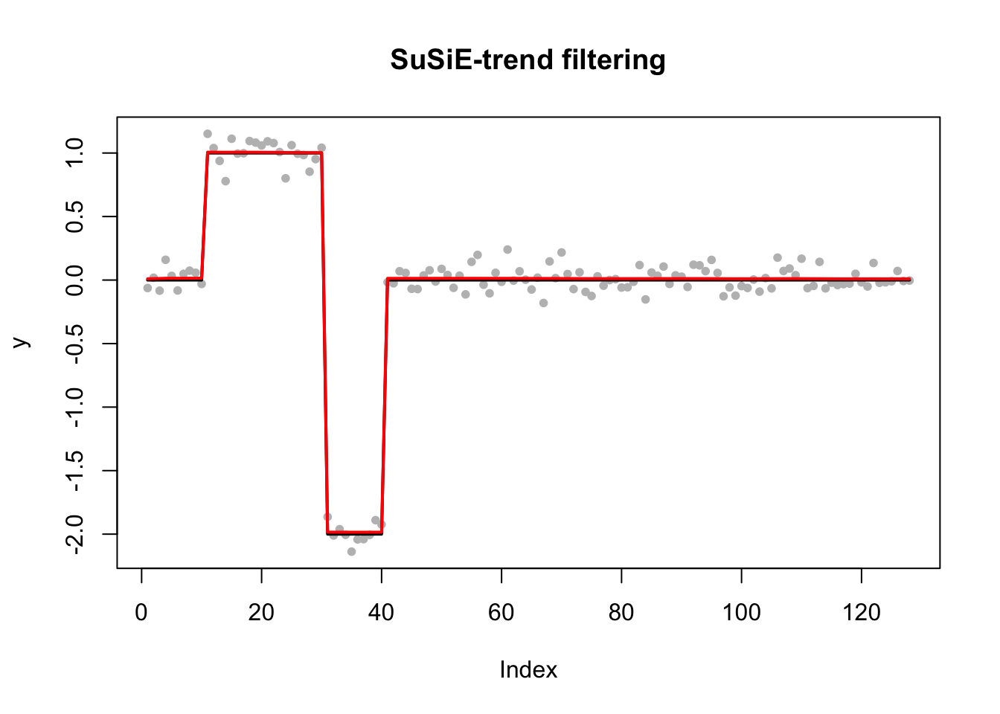
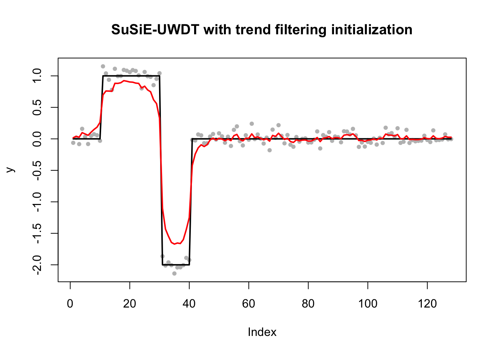

Last updated: 2019-01-14
workflowr checks: (Click a bullet for more information) ✔ R Markdown file: up-to-date
Great! Since the R Markdown file has been committed to the Git repository, you know the exact version of the code that produced these results.
✔ Environment: empty
Great job! The global environment was empty. Objects defined in the global environment can affect the analysis in your R Markdown file in unknown ways. For reproduciblity it’s best to always run the code in an empty environment.
✔ Seed:
set.seed(20190114)
The command set.seed(20190114) was run prior to running the code in the R Markdown file. Setting a seed ensures that any results that rely on randomness, e.g. subsampling or permutations, are reproducible.
✔ Session information: recorded
Great job! Recording the operating system, R version, and package versions is critical for reproducibility.
✔ Repository version: 0e6a2d9
wflow_publish or wflow_git_commit). workflowr only checks the R Markdown file, but you know if there are other scripts or data files that it depends on. Below is the status of the Git repository when the results were generated:
Ignored files:
Ignored: .DS_Store
Ignored: analysis/.DS_Store
| File | Version | Author | Date | Message |
|---|---|---|---|---|
| Rmd | 0e6a2d9 | kaiqian | 2019-01-14 | Publish the initial files for myproject |
In this vignette, we explore undecimated wavelet transform for sparse regression. We simulate piecewise constant data y which has n=2^7=128 samples. We use two different bases:
Discrete wavelet transform (DWT): each basis are orthonormal to each other;
Undecimated wavelet transform (UDWT): we have n*log2(n) bases and they are not orthogonal.
We expect that the fit by UDWT will be smoother than that by DWT.
library(wavethresh)Loading required package: MASSWaveThresh: R wavelet software, release 4.6.8, installedCopyright Guy Nason and others 1993-2016Note: nlevels has been renamed to nlevelsWTlibrary(binhf) #Package for shift functionLoading required package: adliftLoading required package: EbayesThresh
**********************************************
adlift: a package to perform wavelet lifting schemes
--- Written by Matt Nunes and Marina Knight ---
Current package version: 1.4-1 ( 2018-07-09 )
-+ packaged by MAN +-
**********************************************
adlift 1.4-1 loaded
Attaching package: 'adlift'The following object is masked from 'package:EbayesThresh':
postmean.cauchy
**********************************************
binhf: Haar-Fisz functions for binomial data
--- Written by Matt Nunes ---
Current package version: 1.0-3 ( 2018-07-18 )
**********************************************
binhf 1.0-3 loaded
Attaching package: 'binhf'The following object is masked from 'package:EbayesThresh':
negloglik.laplaceThe following object is masked from 'package:base':
normlibrary(susieR)J = 7
n = 2^JHaar_matrix <- t(GenW(n=n, filter.number=1, family="DaubExPhase"))Haar_matrix_inv <- t(Haar_matrix)
dim(Haar_matrix_inv)[1] 128 128n_Haar_matrix_inv <- Haar_matrix_inv
for(i in 1:(n-1)){
order <- shift(seq(n),i)
Haar_matrix_shifted_inv <- t(Haar_matrix[,order])
n_Haar_matrix_inv <- cbind(n_Haar_matrix_inv, Haar_matrix_shifted_inv) #Each column is a basis for sparse regression
}duplicated_columns <- duplicated(t(n_Haar_matrix_inv))
W_T_Haar_nlog2n <- n_Haar_matrix_inv[, !duplicated_columns]dim(W_T_Haar_nlog2n)[1] 128 897Notice that matrix X used in DWT is 128 by 128 (Haar_matrix_inv) and matrix X used in UDWT is 128 by 897. (W_T_Haar_nlog2n)
yset.seed(1)
beta <- c(rep(0,10),rep(1,20),rep(-2,10),rep(0,n-40))
y <- beta + rnorm(n, sd=0.1)fit_susie_Haar <- susie(Haar_matrix_inv, y, L=100)plot(y,pch=20, col="grey", main="SuSiE-DWT")
lines(beta,col="black",lwd=2)
lines(predict(fit_susie_Haar),col="red",lwd=2)
fit_susie_Haar_nlog2n <- susie(W_T_Haar_nlog2n, y, L=100)plot(y,pch=20, col="grey", main="SuSiE-UDWT")
lines(beta,col="black",lwd=2)
lines(predict(fit_susie_Haar_nlog2n),col="red",lwd=2)
If we further estimate prior variance in SuSiE,
fit_susie_Haar_nlog2n_prior <- susie(W_T_Haar_nlog2n, y, L=100, estimate_prior_variance = TRUE)plot(y,pch=20, col="grey", main="SuSiE-UDWT with prior variance estimated")
lines(beta,col="black",lwd=2)
#lines(predict(fit_susie_Haar_nlog2n),col="red",lwd=2)
lines(predict(fit_susie_Haar_nlog2n_prior), col='blue', lwd=2)
library(smashr)
smashr_y = smash.gaus(y)Due to absence of package REBayes, switching to EM algorithm
Due to absence of package REBayes, switching to EM algorithm
Due to absence of package REBayes, switching to EM algorithm
Due to absence of package REBayes, switching to EM algorithm
Due to absence of package REBayes, switching to EM algorithm
Due to absence of package REBayes, switching to EM algorithm
Due to absence of package REBayes, switching to EM algorithm
Due to absence of package REBayes, switching to EM algorithm
Due to absence of package REBayes, switching to EM algorithm
Due to absence of package REBayes, switching to EM algorithm
Due to absence of package REBayes, switching to EM algorithm
Due to absence of package REBayes, switching to EM algorithm
Due to absence of package REBayes, switching to EM algorithm
Due to absence of package REBayes, switching to EM algorithm
Due to absence of package REBayes, switching to EM algorithm
Due to absence of package REBayes, switching to EM algorithm
Due to absence of package REBayes, switching to EM algorithm
Due to absence of package REBayes, switching to EM algorithm
Due to absence of package REBayes, switching to EM algorithm
Due to absence of package REBayes, switching to EM algorithm
Due to absence of package REBayes, switching to EM algorithmplot(y,pch=20, col="grey", main="smashr")
lines(beta,col="black",lwd=2)
lines(smashr_y,col="red",lwd=2)
We observe that the performance of SuSiE-DWT is not decent but SuSiE-trend filering has a great performance. And we want to understand whether the bad performance of SuSiE with UDWT is due to convergence of local optimum. So we initialize SuSiE from its trend filtering fit and then fit the SuSiE with UDWT model. But the result is not in my expectation (I expect a good fit due to initialization) and what other steps I could take to understand why?
fit_susie_trendfilter<- susie_trendfilter(y, order=0)plot(y,pch=20, col="grey", main="SuSiE-trend filtering")
lines(beta,col="black",lwd=2)
lines(predict(fit_susie_trendfilter),col="red",lwd=2)
coef_index <- seq(1,127)
coef_value <- coef(fit_susie_trendfilter)[2:128]
p <- dim(W_T_Haar_nlog2n)[2]
susie_init_trendfilter = susie_init_coef(coef_index, coef_value, p)fit_susie_UDWT_init <- susie(W_T_Haar_nlog2n, y, s_init=susie_init_trendfilter)plot(y,pch=20, col="grey", main="SuSiE-UWDT with trend filtering initialization")
lines(beta,col="black",lwd=2)
lines(predict(fit_susie_UDWT_init),col="red",lwd=2)
sessionInfo()R version 3.4.3 (2017-11-30)
Platform: x86_64-apple-darwin15.6.0 (64-bit)
Running under: macOS Sierra 10.12.6
Matrix products: default
BLAS: /Library/Frameworks/R.framework/Versions/3.4/Resources/lib/libRblas.0.dylib
LAPACK: /Library/Frameworks/R.framework/Versions/3.4/Resources/lib/libRlapack.dylib
locale:
[1] en_US.UTF-8/en_US.UTF-8/en_US.UTF-8/C/en_US.UTF-8/en_US.UTF-8
attached base packages:
[1] stats graphics grDevices utils datasets methods base
other attached packages:
[1] smashr_1.2-0 susieR_0.6.2.0390 binhf_1.0-3
[4] adlift_1.4-1 EbayesThresh_1.4-12 wavethresh_4.6.8
[7] MASS_7.3-51.1
loaded via a namespace (and not attached):
[1] Rcpp_1.0.0 compiler_3.4.3 git2r_0.24.0
[4] workflowr_1.1.1 bitops_1.0-6 R.methodsS3_1.7.1
[7] R.utils_2.7.0 iterators_1.0.10 tools_3.4.3
[10] digest_0.6.18 evaluate_0.12 lattice_0.20-38
[13] Matrix_1.2-15 foreach_1.4.4 yaml_2.2.0
[16] parallel_3.4.3 xfun_0.4 stringr_1.3.1
[19] knitr_1.21 caTools_1.17.1.1 rprojroot_1.3-2
[22] grid_3.4.3 data.table_1.11.8 rmarkdown_1.11
[25] ashr_2.2-7 magrittr_1.5 whisker_0.3-2
[28] backports_1.1.3 codetools_0.2-16 htmltools_0.3.6
[31] matrixStats_0.54.0 assertthat_0.2.0 stringi_1.2.4
[34] doParallel_1.0.14 pscl_1.5.2 truncnorm_1.0-8
[37] SQUAREM_2017.10-1 R.oo_1.22.0 This reproducible R Markdown analysis was created with workflowr 1.1.1